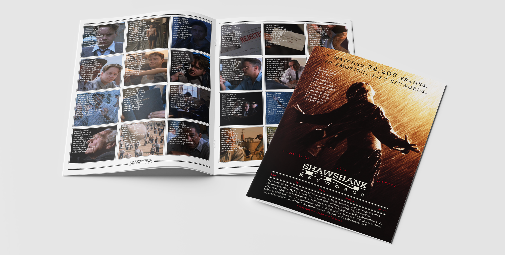
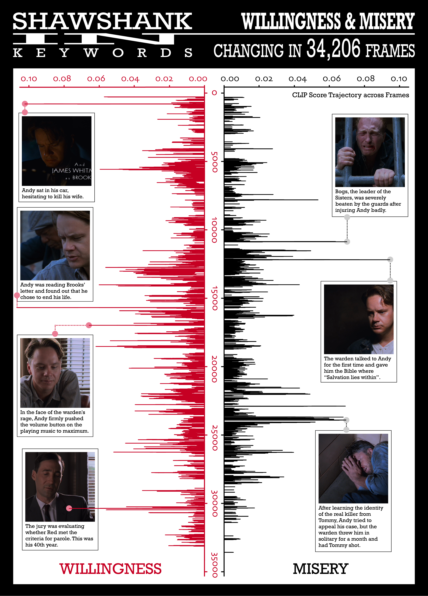

When machines "see," what exactly do they perceive?
This project explores how machines interpret emotionally and narratively rich visual content. Using the CLIP model, 34,206 frames extracted from The Shawshank Redemption were analyzed and matched with keywords from a neutral dictionary of 5,000 words. The result is a reconstructed version of the film—seen through the cold, impartial gaze of a machine—where meaning emerges not through plot, but through patterns of recognition, abstraction, and misinterpretation.
